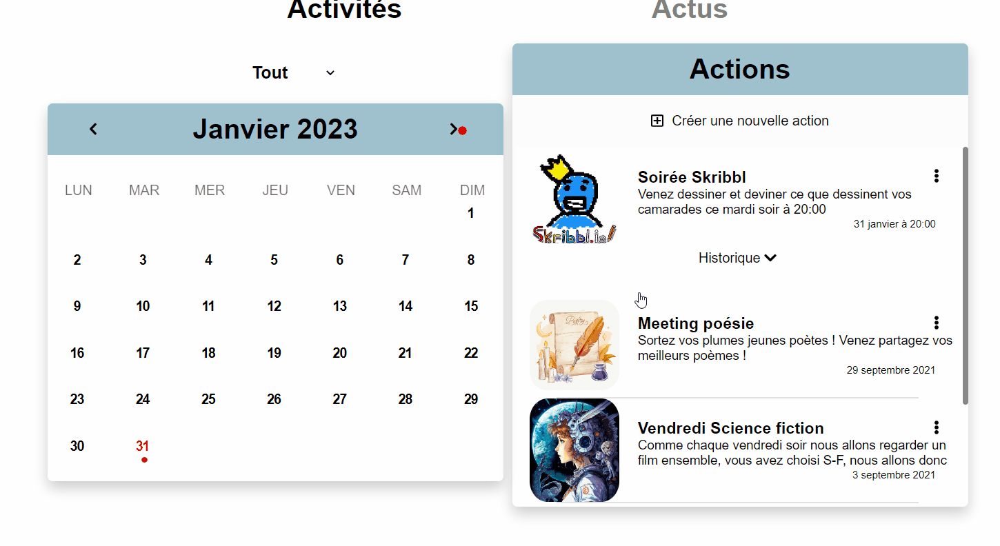
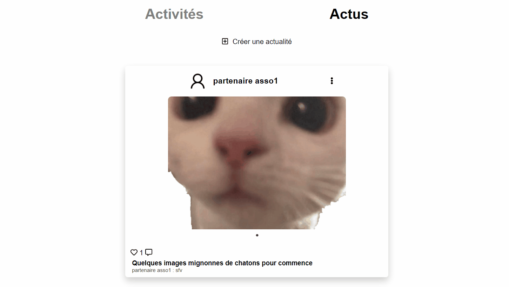
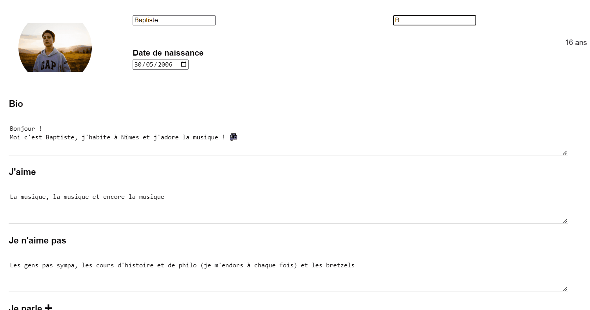

Tandem / BeGood
I carried out this project during my apprenticeship, which lasted one year and 7 months.
I did everything from A to Z, from diagrams on Figma to deployment on a Debian 10 server, including technical choices, writing the specification and other documents, as well as development, but the idea is obviously that of the company I was working for.
It's a web and mobile application for remote pairing and linguistic and cultural exchange, managing activities, etc...
The project's business model is B2B2C
The schema below explains it a little better.
The main technologies used are Node.js (Express.js) with MongoDB as the database, Vue.js for the front end, Socket.io for instant messaging, Debian 10 and Bash scripting for deployment. I also made it a PWA or Progressive Web Application to make it more easily usable on mobile.
Tandem / BeGood
J'ai réalisé ce projet pendant mon alternance qui a duré un an et 7 mois.
J'ai tout fait de A à Z, des schémas sur Figma au déploiement sur un serveur Debian 10 en passant par le choix techniques, l'écriture du cahier des charges et autres documents ainsi que le développement, mais l'idée est évidemment celle de l'entreprise dans laquelle je travaillais.
C'est une application web et mobile de jumelage à distance et d'échange linguistique et culturel, de gestion d'activités etc...
Le modèle économique du projet est B2B2C
Le schéma ci-dessous explique un peu mieux.
Les principales technologies utilisées sont Node.js (Express.js) avec MongoDB comme base de données, Vue.js pour le front, Socket.io pour la messagerie instantannée, Debian 10 et du scripting Bash pour le déploiement. J'en ai aussi fait une PWA ou Progressive Web Application pour la rendre plus facilement utilisable sur mobile.
En gros, nous avons plusieurs thèmes (Tandem, associations etc...) que l'administrateur peut créer et gérer. Dans chacun de ces thèmes, nous avons un certains nombre d'organisations (Associations, écoles etc...) qui ont chacune des utilisateurs (membres, élèves etc...) et des superviseurs (ou profs) qui participent à l'organisation des activités, l'inscription des nouveaux membres etc... Une organisation ne peut être inscrite que par l'admin ou par son organisation mère (qui a été inscrite par l'admin), cette dernière peut inscrire à son tour ses membres et ses superviseurs, qui peuvent aussi inscrire de nouveaux membres, le tout dans une limite de nombres d'utilisateurs qui dépend du plan souscri par l'organisation mère.
Basically, we have several themes (Tandem, associations etc...) that the administrator can create and manage. In each of these themes, we have a number of organizations (Associations, schools etc...) that each have users (members, students etc...) and supervisors (or teachers) who participate in the organization of activities, insciprtion of new members etc... An organization can only be registered by the admin or by its parent organization (which has been registered by the admin), the latter can in turn register its members and supervisors, who can also register new members, all within a limit of numbers of users that depends on the plan subscribed by the parent organization.
Chaque thème a ses propres centres d'intérêts mais le plus important à retenir c'est que chaque organisation mère a son propre écosystème avec uniquement ses organisations partenaires et leurs membres / superviseurs, c'est à dire que ces derniers ne peuvent en aucun cas entrer en contact avec des membres d'une organisation appartenant à un autre écosystème.
Each theme has its own hobbies but the most important thing to remember is that each parent organization has its own ecosystem with only its partner organizations and their members/supervisors, which means that they cannot in any way contact members of an organization belonging to another ecosystem.
A brief presentation of main features
Présentation
Application architecture
Architecture de l'application
-The backend is an Express.js REST API. -The frontend is a responsive Vue.js application. -Data is stored in a MongoDB database.
-Le backend est une API REST utilisant Express.js. -Le frontend est une application Vue.js. -Les données sont stockées dans une base de données MongoDB.
Login
Connexion
Users can login from this form. There is no signup form as all users are created by their organisation as sayed before.
As you see, the application is available in 4 langages.
Les utilisateurs peuvent se connecter depuis ce formulaire . Il n'y a pas de formulaire d'inscription comme tous les utilisateurs sont inscrits par leur organisation comme dit plus haut
Comme vous le voyez, l'application existe en 4 langues.
Activités
Activities
Les activités sont organisées dans un calendrier entièrement codé par moi-même, je n'ai utilisé aucun plugin etc...
The activities are organized in a calendar entirely coded by myself, I did not use any plugin etc.
Organizer part
Partie organisateur
The organizer can create, modify and delete HIS activities, he can only modify and delete those of other organizers/supervisors if they have granted him this right, but any activity can be deleted by his hierarchical superior (the hierarchy explained above).
L'organisateur peut créer, modifier et supprimer SES activités, il ne peut modifier et supprimer celles des autres organisateurs / superviseur que si ces derniers lui ont accordé ce droit, mais toute activité peut être supprimée par son superieur hierarchique (la hiérarchie expliquée plus haut).
Member part
Partie membre
Members can see the activities they have access to (from the groups they are in etc...) and can register for them.
Les membres peuvent voir les activités auxquelles ils ont accès (de par les groupes auxquels ils appartiennent etc...) et peuvent s'inscrire dessus.
The activities can also be filtered by date by clicking on a date on the calendar, by month, those coming up this month and those in the next few months, as well as the history of past activities, the user can also filter by group to see only the activities related to a group he/she belongs to, as can be seen in the picture.
On peut aussi filtrer les activités par date en cliquant sur une date sur le calendrier, par mois, ceux à venir ce mois-ci et ceux des prochains mois, ainsi que l'historique des activités passées, l'utilisateur peut aussi filtrer par groupe pour ne voir que les activités liées à un groupe auquel il appartient, comme on peut le voir sur la photo.
Et oui, toute l'application est responsive et accessible depuis un mobile
And yes, the whole application is responsive and accessible from a mobile
News
Actus
Here anyone can publish something, it can be a simple text or images (with text). Other members (same ecosystem) can see thoses publications, like and comment them.
Ici tout le monde peut publier quelque chose, ça peut être une texte simple tout comme ça peut être des photos (accompagnées de texte) Les autres utilisateurs (du même écosystème) peuvent voir ces publications, les commenter et les liker.
Profil
Profile
Each user can fill his profile with his informations and fill his hobbies (if it's a member) so he can match with other members and get to know them.
Tout utilisateur peut remplir son profil et renseigner ses centres d'intérêts (si c'est un membre) pour pouvoir accéder à la page de matching avec les autres utilisateurs et faire leur connaissance.
Tout type d'utilisateurs a un profil différent avec des élements différents à renseigner
Every type of user has a different profile with different elements to fill in
Modération
Moderating
Tous les membres peuvent signaler du contenu allant contre les règles d'utilisation, comme des propos insultants en messages ou sur un profil. Les responsables ont des fonctions de modération pour s'occuper de ces cas.
All members can report content that goes against the rules of use, such as offensive language in posts or on a profile. Managers have moderation functions to handle these cases.
J'ai aussi créé une interface de moderation sur laquelle on peut visualiser l'ensemble des utilisateurs existants.
I've also created a page where a moderator we can see all users and moderate them.
Messages
Les utilisateurs d'un même écosystème (en plus de l'admin) peuvent s'envoyer des messages instantannés. J'ai utilisé socket.io que j'ai sécurisé en faisant en sortes que l'envoi de messages ne se fasse pas par requête socket mais par https
Users in the same ecosystem (in addition to the admin) can send each other instant messages. I used socket.io, which I secured by making sure that messages were not sent by socket request but by https.